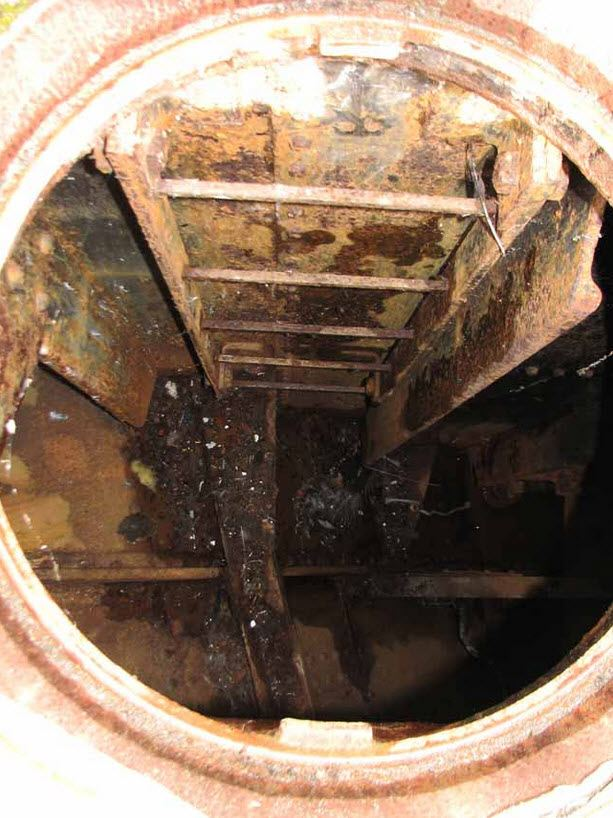
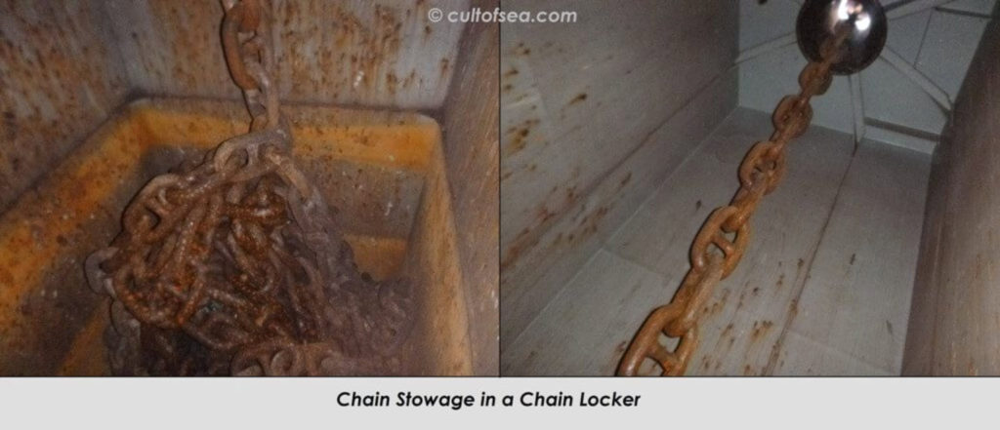
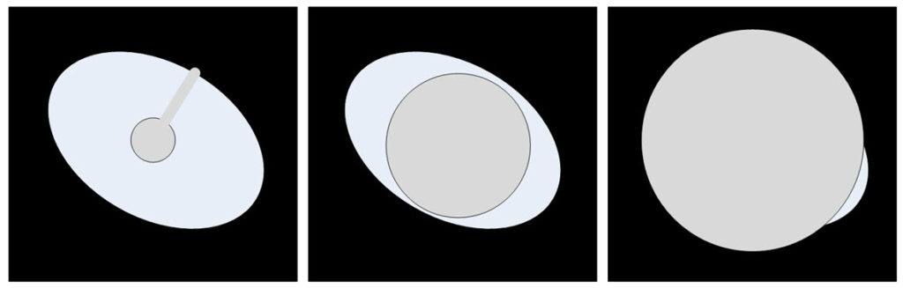
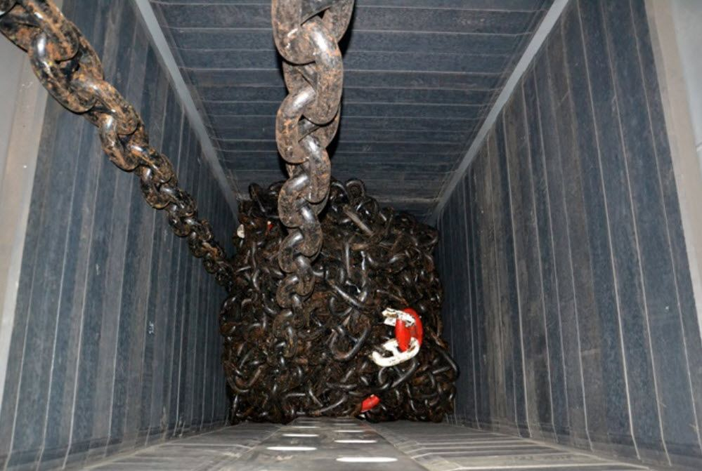
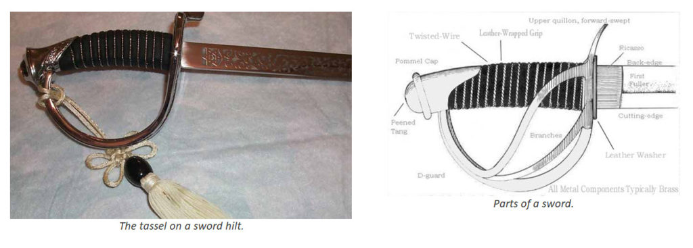
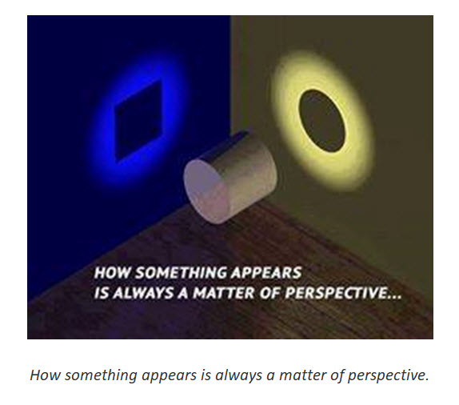

This is a continuation of part 1. It discusses what it was like for me to go through the decommissioning process.
When my group was “retired” it was very cold, calculating.
It was methodical and ruthless. I was targeted for “disable and discard”. A chick came into my life. Dragged me to Arkansas on the promise of a great job and a new life, poisoned the living shit out of me with heavy metals while having me sign away on multiple life insurance policies.
The neurological effects got to be pretty pronounced, and was noted by the hospital, and that is what triggered the “fall back” solution; retirement as a sex offender. Aside from the personal angst, it really was “click off the boxes”, “ram through the system”, and “discharge” into the arms of another agency that knows Jack-shit.
[#08] The promise of a new life
After proceeding through ten closure programs; ten figurines, I stood facing the frozen Asian girl figurine. Why was she important? What did she represent? Well, as I will explain here, she represented my closure and rewards. But how?
Can it be that these were the promises of what would happen once I completed my retirement?
It would make sense if that were the case. To promise me great rewards of an enviable life of promise, love and adventure in a far away and exotic land; a land of which occurred only in adventure yarns and romance novels. Was this the purpose of this subroutine? I believe that this was the case as well as the purpose. Yet… One must wonder. Truly, what good is a promise if it is empty? How could this promise be manifested? Certainly no public official, or MAJestic member would cut me a check; buy me a plane ticket and put me on a plane to the South Pacific, would they?
That lies and belies the entire sequence of importance that resides within the quantum mental state; thoughts create realities. Our thoughts (no matter how we obtain them) eventually create the reality that we experience in the physical.
And, if so, was it [1] because my thoughts control and create my future, or that [2] the extraterrestrial technology had the ability to dimensionally split me off to another reality? A reality, mind you, that they have created for me once I have successfully completed their tasks? This is truly heady stuff, guys.
I say this, because I am right now living the life that was promised to me by this program.
I thought about this while living in a beach house on the ocean on an island in Polynesia, being married to a very busty and attractive Asian, half my age, with a great set of legs. You know, I can’t help but wonder about this. This is not a life that one just suddenly stumbles into by accident. It is a life that is materialized and manifested through thought. And if one’s thoughts can be controlled by implanted probes, and those probes can have a program that directs thought… then the program can create the life that you will live. (This paragraph is perhaps the most important paragraph in this manuscript. Therefore it deserves a second read. Understand what I am saying.)
Let me begin by relating how I was able to access this program.
This retirement program ran all day long, and I was exhausted. I guess that perhaps six hours had transpired by the time I reached the frozen figurine of the Asian girl. Up until this time, I would spend it running fully ten other subprogram routines.
Each program would be accessed by going up to the frozen figurine and looking at it intently. As I would do so, I would become absorbed into it, and I would find myself in a different place and situation. Each situation revolved around the idea or concept embodied inside the figurine that stood before me.
These figurines represented a closure program.
At times I was reliving or running these individual programs. I was learning lessons, or reliving events. I was obtaining emotional satisfaction and closure on events and mysteries that were just now being presented to me.
It was all very complex and elaborate.
It was as if I was at the pinnacle of my life and learning the; who, where, and why of my significance. This was all about closure. This was all concerning my life and the impact that it has on others.
After I would run the program, I would exit it, and the figurine would remain.
But it would be a little different. It would have changed. After I ran the program, I felt a tremendous release, as if a burden had been released from my shoulders. The figurines reflected this.
After ten such programs, all that remained were two remaining figurines. They were the [1] Asian girl, and the [2] Marine warrior.
I stood in front of the Asian girl, and merged with the program.
In it; I found myself walking on a lush tropical beach with a wonderful azure blue sky and daylight filtering from the leaves of mango and durian trees. I could see the waves softly lapping on the wide expanses of sand, and the occasional sea shell or conch shell that had washed up upon the beach. I could see the green-blue water lapping upon my toes, and the curved beach ahead of me.
Before me walked the Polynesian / Asian beauty. Her long lush blueish black hair blew in the breeze. Dressed, as she was in a sarong and not much else. Her toes splayed out as she walked in the sand, and she held a tropical drink in her hand. (I know this sounds very corny and terribly stereotypical, but that is what I experienced. I was reliving a Harlequin Novel; no matter how nauseating it might seem to the reader. It is what happened.)
Harlequin Novel The romance novel or romantic novel is a literary genre. Novels of this type of genre fiction place their primary focus on the relationship and romantic love between two people, and must have an "emotionally satisfying and optimistic ending." There are many subgenres of the romance novel including fantasy, historical, science fiction and paranormal.
“You want this.”
Yes, I know it is corny, but this is what I experienced, as stereotypical as it is. This is exactly what I experienced. I wish it wasn’t so stereotypical or odd, but it is what it was. So I present it her in all it’s stereotypical and obscure glory.
The drink was a piña colada and it was inside a coconut shell with chunks of pineapple floating in it.
The piña colada is a sweet, rum-based cocktail made with rum, cream of coconut, and pineapple juice, usually served either blended or shaken with ice. It may be garnished with a pineapple wedge, a maraschino cherry or both.
It had a standard plastic straw of red color just sticking out of it with a 1960’s style tiny umbrella attached to it. She looked at me with the most amazing big dark eyes. She had unusually large and lush lips that were moist, open and inviting. She approached and got up really close to me. I could smell the sun on her skin, and the smell of the ocean and sand. I detected a faint whiff of some tropical perfume in her hair. She was much shorter than I was. Perhaps 5’2” tall.
Typically I could not experience smells when I was engaged in the ELF field. But I was able to in this sequence. I must wonder why.
I know.
I know, that all this is super corny.
But this is EXACTLY WHAT I EXPERIENCED, for good, bad or corniness.
The drink disappeared from her hand and with both hands she softly and lightly held my hands in hers. She looked at me intently. She whispered to me. It was a promise.
She said to me that I did not want wealth, nor did I want power.
She knew me, she said.
She looked at me with a serious expression. “You want this”, she said.
She placed my hand on her breast and turned around so that my arm was holding her chest and she pressed her back against my chest. And moved her hand out upon the expanse of Lush Ocean, and green tropical hills with beautiful clouds. “You want this”, she said again.
Then she turned around again to face me.
She continued to look into my eyes deeply. “You deserve this.” She said. “You need this. You earned this. This is yours. Take it. Accept it. Move on with your life.”
She then paused.
She softly put her head in my chest. And hugged me softly, and the sun rapidly set upon the vast tropical ocean. As it gradually got dimmer and dimmer, the words resonated in my mind.
I knew that she was giving me this life, this new state of life and being. But how could it possibly mature and transpire? I did not know. Yet, still the words echoed in the gathering darkness. The breeze increased and she held me closer. “This is your reward”, she cooed. “This is all yours. Thank you.” She kissed me, and the program ceased and I found myself back in the black nothingness room with the twelve frozen figurines.
Her words just echoed on my mind…
“You want this.” “You deserve this. You need this. You earned this. This is yours. Take it. Accept it. Move on with your life.”
+ + +
Look, I know this was a program. I knew what was going on. This was all about my retirement from a system that controlled my mind. As such, they could get into my mind. They could expose me to holographic events and movies in which I would be able to participate in.
While the previous ten figurines all had specific closure sequences. This one was different.
Instead of shutting down knowledge and experiences, this was about a future. A future in which I will be rewarded for my efforts in a way and manner that suits my personality profile. Not through the rewards of money or lavish expensive collections of possessions, but rather of a stress free life with a beautiful (and sexy) companion in a beautiful place.
But, still I had to wonder…
How would this come to be? How could this possibly transpire? I was facing five years ahead of me at hard labor and probation. My immediate future was hardly a paradise by any stretch of the imagination. It was a mystery that I would not even begin to contemplate to a full ten years afterwards. Because, exactly ten years later, this life actually and did completely manifest into reality.
This promise that was made to me that day, manifested into reality, ten years later.
This was no literary fiction. I actually ended up living on Tutuila island in the Samoan island chain. That is another story for another time. But the idea that a software program associated with the ELF probes would direct my thoughts to manifest reality is a significant point that the reader must not discount. We live in a multi-dimensional universe. If we control our thoughts we can manifest our physical realities in the way that we prefer. But if people, of evil or other intent, have the ability to do so, they can also mold and create the reality that we experience. That is why the manifestation of sentience is important to the <redacted>. They do not want us to develop into service to self-sentience. If we did so, then the clutch of mankind evolutionary prospects would be minimized to the great detriment of the local federation.
+ + +
I was pretty tired from the events of the day so far. I had gone through eleven subprograms and I was exhausted. Yet one final program remained. This was the final program.
This program was the Marine program.
(In my mind.) I walked up to the frozen figuring and stood looking at myself as a battle hardened Marine. I looked up into its eyes. I knew what it was about. I knew what it represented. I understood what and why I had to make this final encounter.
[#12] The retirement of the spirit of a Marine
Upon merging with the image (computer sub-program) I found myself walking upon the ruins of a giant ship yard.
The image that I had was piles of wrecked and dissembled ships that lay bare upon a sea side. The metal and steel shone brightly and reflectively in the clear day. The sky was blue and trees could be seen in the distance. The impression that I had was that the site was huge, but containable, and that I was in a large naval scrap yard. It was near the sea or ocean and it was a bright and sunny day. It was so sunny that the light glinting off the bare and exposed steel was painful to look at. yet the trees at the edge of the wrecking yard were beautiful florescent green upon a nice blue, blue, blue cloudless sky.
This yard was involved in the dismantling of boats, and ships of various sizes and ages. It was a bright and clear day. Maybe ten in the morning. The sky was pristine blue, and the colors of the distant trees and buildings were remarkably colorful. In particular, the trees were a bright lush green, and the sky was nearly cloudless.
Surrounding me were piles of shiny metal and the ruins of many a fine steel ship. Most of the piles were just collections of town ship parts. There would be a partial stern of a ship here, and a torn bulkhead there. Wires, sheet metal, and fixtures lay about everywhere.
As I walked about, I saw no one to greet me. This was quite unusual. As all the other program subroutines involved a persona or character that I would interact with. I could see tiny workers in the distance. One man, wearing a plaid red shirt, was inside a booth controlling a crane, and there were a few men in the distance walking along the tree line.
I found myself led, by curiosity or random activity (?), towards a pile of debris off to my right. As I approached it, I could see what it was.
It was a (fragment or a broken section of) bulkhead with an array of small boxes set into the wall.
They looked like little mail boxes. Each mail box had a number. I was curious and so I walked up to it to observe it closer. I reached my hand to brace myself as I got closer to peer at the boxes. I maneuvered myself to get closer, carefully avoiding the rough jagged sharp edges… As I touched the rough edge of the torn bulkhead…
+ + +
Everything was different. It was a different time and a different place. I was a deck hand. I was an immigrant to America. My name was (Sorry, but at the time of this writing I have discovered that I have forgotten the name. I just cannot remember the name), and I came from an eastern European country. I had black curly hair, and a black beard. I wore a watch cap of sorts, and period costume naval work clothes. I was in the merchant marine. The year was sometime in the 1880’s to 1900’s more or less. (Post American civil war, but before the turn of the century.)
Watch Cap A knit cap, originally of wool (though now often of synthetic fibers) is designed to provide warmth in cold weather. Typically, the knit cap is of simple, tapering constructions, though many variants exist. Historically, the wool knit cap was an extremely common form of headgear for seamen, fishers, hunters and others spending their working day outdoors from the 18th century and forward, and is still commonly used for this purpose in Scandinavia and other cold regions of the world. Being found all over the world where climate demands a warm hat, the knit cap can be found under a multitude of local names.
In the blink of a nanosecond, I found myself at the bow of the ship, near the chain locker.
It was yet another reality.
It was an understanding, or a realization of my place; my role, or my life. I had a task. I had a chore to perform. Staring down the dark portal below I could see the deep bowls of the inner ship below. It was dark and dim, but I could barely make out the sides of the steel bulkheads below.
My job was to clean it, or to retrieve something that had fallen down inside of it. I do not know which.

I had to do my job, or perform my task. It was my role; my purpose. So I did as I was instructed. I went to another part of the ship and moved towards the bow. I entered the (chain) locker through a small hatch below decks. It was an access hatch; seldom used.
I opened the port, and stepped inside. I found myself standing there. I stood there looking around the dim chamber.

It was dim, but not entirely dark. It was smelly and smelled of mud, dirt, grime and oil. The chamber was hot, damp, humid and stifling. I started to look around the small chamber.
I was searching for something.
I had to climb up and around various rough edges and huge chain that occupied the entire deck of the chamber.
When suddenly I heard a sound above me.
I looked up. I saw the chain spilling down towards me.
As the anchor chain in the portal above me started to move, I started to move. But it was no use. The heavy steel links flowed down into the small chamber
The chain cascaded down into the chain locker. I watched it come towards me.

It hit me on the face.
It hit me.
The tons upon tons of heavy iron chain fell down and smashed me.
All became dark.

(I died. I was in the bow chain locker and tons of anchor chain fell down upon me killing me instantly. I don’t really know the significance of this portrayal of the event at the time; though I would later. But for now the reader must understand that I experienced the death event of a Merchant Marine sailor in the late 1880’s.)
The next sequence of events was like participating in a documentary. Not watching a documentary, but rather participating in it.
I saw the ship sail on without the seaman. I saw how the seaman became part of the ship. How his soul became the very soul of the ship. He did not haunt the ship as a ghostly specter, but rather, became an integral part of the lifeblood of the ship. As we deal with possessions and things, our quanta entangles with it, and we become combined. This is the same with anything. Be it relationships, items, desires, thoughts. The seaman had become part of the ship. The thoughts and dreams, hopes and desires of the other sailors, through the years merged with the spirit of the dead merchant marine sailor.
The metal, of the ship, had a soul.
But as all things do, the ship became old and obsolete. Eventually, it too was retired. Much like I was. But a soul cannot be destroyed. Can’t you understand? A soul can be changed, and altered, but it still exits. The soul of this sailor still existed, even when the ship was torn up and shattered apart and sold for scrap. Every part of that ship was a soul of that sailor. And, his soul was the complete embodiment of all the hopes and dreams and experiences of all the men who sailed on that ship with him, and since that sailor died.
+ + +
It was as if shreds of this piece of metal were scattered throughout the world. Small pieces of shiny metal went everywhere. I could see the spirit of the dead crew-member leaving his body at the moment of impact and death. But it was not a linear progression of past, present and future. But instead it was the simultaneous expansion of all potential futures and presents. For as the seaman rose to join the rest of his quantum cloud, he simultaneously felt the expansion of a future where his soul would merge with the ship.
I lived his death sequence.
I felt his soul rise up following the chain that cascaded upon his smashed and lifeless body. It rose higher and higher. The brightness became magnificent. It rose above the deck of the ship and traveled up the mast of the ship. It grew brighter and more powerful. It became like a small star. I found myself shouting out loud (outside the program, and inside my cell);
May I be the shining light for all to see… So that others may follow me… And be the man who I was truly meant to be…
A buzzing noise reached a crescendo and I exploded into tiny fragments that cascaded down upon the twelve frozen figurines. Each piece was a small sliver of silver metal. (A sliver of metal that was in itself a small part of the ship that my soul had merged with.)
And each one floated to a position inside the tassel affixed to the swords that suddenly all the frozen figurines were holding.
To my surprise, I found myself standing in front of all the figurines again. But this time they were all holding up their swords to create an arch from which I would walk under.
Each sword had a tassel, and associated with that tassel was a little ball, or bead that dangled next to it.
Inside that bead was the soul of the ship.
It wasn’t just the soul of the ship, but the soul of every man and every sailor. It was their combined hopes and dreams and every one of the figurines carried this essence with them.
My goal was to walk under this protective canopy to release my soul to find a new life of greatness and meaning.

I began to walk forward. Each time as I passed a frozen figurine it dissolved and disappeared, and I became lighter, more powerful and stronger. I absorbed the essence and very being of each figurine that I walked past. They were all part of me, but of isolated connectivity. But when I walked by them, we connected. With each step this happened. I continued through to the end of the line. Each time, getting stronger and brighter and lighter.
Finally I reached the end of the line and I saw the Marine before me. He looked me sternly in the eyes and picking up his sword, snapped it in two on his knee. And when it snapped… when the event occurred, it was like a bolt of lightning struck me. Everything went white; a blazing and blinding white light.
+ + +
I found myself in a strange state. I was a disembodied white orb hovering over the former ship which killed the merchant marine sailor. I was both everywhere at once, and nowhere at all. It was an odd feeling. It was unlike anything that I can ever describe. It was a feeling totally unlike anything that a human can or will experience.
Shutting down of all my programs
At that time, one of my handlers at the ELF control booth, spoke up. “What is the code?” he asked. “Tell us the code”, my interlocutor ordered.
The imagery around me changed. I found myself standing outside the wreckage of the shipyard scrap heap. I was next to the bulkhead with the many small “mail boxes”. I walked closer to it and looked at the boxes. On each box was a number and a name of a seaman. The name of my patron seaman was on one of the boxes. The writing was in pencil and old fashioned script but still legible. I read the number on the box.
Four. Three. Seven.
I stated. There was no questioning it. That was the number on the box. The box still remained. It had a combination lock on it. This combination lock had two dials. Each dial pointed to a letter instead of a number.
The handler from the ELF control booth said “open the box”. And, without even thinking about it, or how I was able to do so, I moved the dials to the correct combination. I moved the dials to “H” and to “R”.
The box popped open.
“What is inside?” he asked.
I looked inside. There was a scrap of paper. It looked like the torn bottom from a letter. It was as if someone had torn away the bottom of a page of paper. On it, in pencil were words. But I couldn’t make them out. They were smudged and faint. Again, it looked like someone had written in script in the bottom margins of a book or paper.
“Read it.” The handler commanded.
The words became clear and took form. I could clearly make the words out and it took on a new meaning as I read the words. I now understood everything. It was clear to me. All of this, it was all clear to me now.
“What does it say?” the handler asked again.
I read the scrap of paper.
“I will wait for you. You belong in the islands with me. Our futures are entwined. I don’t know how or when you will return to me. But I will wait for you. When your labors are done, I will be ready and waiting for you. Come home, my love. Come home to me.”
And next to the slip of paper was an old faded black and white photo. It was one of those photos that required a person stand in front of an old style camera. One by which the photographer would stand under a dark cape to take. On it was a picture of the (now dead) merchant marine sailor standing next to his girlfriend. She was a cute girl of Polynesian / Asian descent. She was the splitting image of the frozen figurine that I had encountered earlier.
She was waiting for me. I knew it. When my adventures were complete, I could return to her. I had been away too long, and it was now time to hang up my gear and finish my labors. It was time to go home.
“Are you ready to go home?” the handler asked.
“Yes”, I paused. “Yes I am” I replied
I felt a warm wash of emotion flow through my body. It was a calming of expanse of mind. My heart expanded as did my mind. I felt my body get light and the sights around me grew lighter and brighter. I felt myself flying up, up higher… And higher
Higher.
Lighter and lighter.
“What are you?” He asked.
“I am the bright and shining star for all to see.”
Completion
My vision returned and I was back inside my cell. I had been at this entire exercise all day, and I was totally and completely wet. My cell was hot, and I had been perspiring terribly. I got up to get some water at the sink, but it mustn’t have been well grounded, so every time I went near it I got a pretty nasty electric shock. (Pretty hard to accomplish with moist sweat covered palms.)
I sponge bathed myself and then laid down to sleep. I was exhausted. I didn’t eat all day, and I was famished. The entire exercise lasted from the morning after breakfast through to about six in the evening. I just simply closed my eyes and fell into a deep sleep.
I meet the former Commander from NAS NASC Pensacola
The next day I woke up and my cell door was opened. I was free to join the line with the rest of the inmates. Just so, and got in line with the rest of the inmates. By now, after over a week of evaluation (ten days), they were able to trust me somewhat, and I no longer had to be so sedated. Nor did I require guards to march me everywhere. I was almost completely finished with my deactivation, as well as the “official” purpose of the evaluation; to measure my threat to the community as a sex offender.
I was told to get out of my one-piece white coveralls and was issued some “state issue”. Which is a pair of pants (with a rope draw-string) and a top. Both white. And had my Prison identification number stenciled in big black letters over my left breast. We were all issued two sets.
I was issued, like everyone else, a faded outfit that looked like others had worn it. You can tell with their old identification numbers crossed out, and mine written over them.
After I received my “state issue”, I went back to the barracks. It was time to et, and you did not want to miss that.
As I waited in line, another “inmate” walked up to me. He was older than me, and came up to me in a very friendly way. He was wearing crisp brand-new ‘state issue” (prison uniform) with no lettering. (Which was curious, as all of us had our identification number stenciled upon our clothing.
He said “Hi”, and looked at me closely. And then, staring into my eyes, asked “Do you remember me?”. I looked back at him. Indeed he looked familiar. But I could not place him at all. So I told him that. I said “Well, you certainly look familiar, but I just can’t place you.” He smiled, and walked away. That was the first and the last time that I saw him there.
“Do you remember me?”
It wasn’t until later on, after I ate, and later on that night that I realized just who this person was. It was the Naval Commander. The exact one who I met so many years ago at NAS NASC Pensacola.
He was there to say good bye.
The reader should pay close attention. The base commander was there, dressed in inmate attire in GP, but he was NOT an inmate. He did not accompany us into the mess hall. He did not have an assigned cell in the barracks. He was dressed in the prison whites so that he could meet me up close, but he was not an inmate.
The last time that I saw him was when he dropped me off at the Chow Hall in 1981.
Accessing the Source Code for Deactivation
Things were winding down during this evaluation period. Overhearing the guards, I knew that the gentlemen from Washington would be leaving soon. That only could mean that the final stages of my decommission would occur shortly. I didn’t have to wait long. While I was standing up, I suddenly felt the familiar buzzing associated with centering on the feducials. And I knew what I had to do. I stood up and looked at the feducials and centered myself.
Suddenly there was the long forgotten, but familiar album art overlay in my visual field. I went to lay down and watched the operators modify the settings. I watched passively and let them do their tasks. It was pretty simple, really. They simply would lock a suppression command in place, and archive the transmittal abilities associated with the probes. They did this and then let me alone. I was decommissioned.
Conclusion of my Evaluation
With the conclusion of these mind-numbing sequence of events, I was finally deactivated. The “experts” who were present at the facility had packed up and left the prison complex. Everything was settling down into a normal prison routine. While the ELF field was still on, it was more or less, unused. My handlers were silent. The carrier waves associated with it was off, and the cadence beats were completely silent. For all practical purposes, I was near the end of my deactivation sequence.
I went to the psychiatric expert at the prison and he told me that they had concluded that I was no threat to the community. They labeled me a level 1 threat level and told me that I did not have to attend the reeducation program for sex offenders. This was good news, and he issued me a paper associated with it.
Arkansas, at that time, had four classification levels. That was different from the three level system that is federally mandated.
Upon handing me the paper, for some strange reason, my diagnostic screen again snapped on and it overlaid my field of vision. I could see that everything was shut down and locked into place. I felt calm and relaxed. It stayed in my field of vision for about four hours and then snapped off. I knew that my deactivation ordeal would soon be ending.
Or….
So I thought.
Lester has some Fun
Well, that is what we all thought. The gentlemen from Washington thought that their work was finished. I thought that I was decommissioned. And we both believed that everything was finished.
This is what we thought, but the ELF signals did not originate locally, their origination point is somewhere else. And, thus the field was still on. It would remain on for another three to four days until turned off. In the meantime, the local prison guards still had access to the local command booth in the diagnostic center. And one of the guards, a guard appropriately named Lester, thought it‘d be great fun to play with the controls.
It ended up being one of the most horrific events of my stint in the ADC.
For reasons; not entirely clear to me, the primary core kit of implant probes provided a base line or first-line of control (or defense) in memory retention and access by MAJestic or other branch operatives. The ELF signal point of origination was often very far away from the targeted agent. The signal modulated thoughts and some basic memory functions, but the full spectrum and range of control (for some reason) required close (on site) supervision. That is to say; there had to be someone near me, monitoring me and controlling the implants in some way. That control had physical limitations in distance and range of control. The secondary kit; which controlled the drones, obviously did not have this limitation. My retirement was predicated in the closure and security of my memory access. Thus it mandated that the core kit one probes be accessed in great detail. Thus the requirement for a physical retirement facility where I could be contained; restrained and eventually deactivated.
Oh, Lester was a funny fellow.
He started to adjust the knobs and buttons. He enjoyed me howling with pain. He could make my arm twitch, and could make me lose my bowel movements. He could make me ejaculate and give me tremendous headaches. He was having a great time doing this. There was nothing that I could do to stop it. Everything I tried; every plea I cried, and every action I took were inefficacious. I begged him to stop, but he wouldn’t. My body would start thrashing about and twisting. Yet he would not stop. Suddenly; somehow, he actuated the source code menu. I don’t think that he had any idea what he was up to. He just continued to play with the switches and dials. I do not think he knew, at all, what he was doing. (Then surprisingly; out of the blue, something amazing happened.) My source code control dialog menu filled my visual cortex.
And, even though he continued to play with all manner of switches in the control booth, and played at the control panel, I was able to now access my own brain software. I was no longer locked out. Oh, it is true, I continued to undergo this period of crazy torture, but all the time, now the access menu filled my cerebral cortex.
I took advantage of this situation.
The reader should know and realize that by using the codes that were still present on the source code display, I was able to retain my memories and reverse the suppression of the memories. I did not change anything else. I left the transmission ability of the ELF probes to be turned off, and pretty much left everything else in the same state. He did manage to alter some of the comfort settings, but I was able to reset them.
Eventually, the guard was relieved, and I was able to rest. While there were some minor events since that time, in general, my role as an ELF agent was decommissioned. But thanks to the wayward guard, I now had full and total recall of all my memories associated with the two ELF programs that I participated in. In fact; I had more memories than when I was first arrested. I remembered everything; everything that ever happened to me. This entire event released every single memory lock placed in my brain. Every single one was unlocked and I remembered the most amazing things; things that, I am sure, I was not intended to recall.
…not intended for me to recall.
I regain control of my software
Let’s chat about this for a little while, in more detail.
I might have made bad decisions. I most certainly was not in the situation that I wanted to be in, but I was not stupid. I knew what had transpired. That bozo of a guard messed up the settings that both my handlers and the “experts” had put in place. Like a spoiled child he had completely made a mess of the internal settings and lock-downs associated with my mind. Who knows what long term consequences that would have?
Bozo the Clown is a clown character very popular in the United States, peaking in the 1960s as a result of widespread franchising in early television. As slang the term “bozo” refers to a clownish and silly person who is known for stupidity and poor judgement.
Would I [1] get cancer? Could I become [2] sick, [3] mentally unstable? Would I have [4] memory loss, or [5] persistent nightmares? Anything could happen. Could I [6] accidentally get locked inside the drone with no drone pilot controlling it? It was a frightening proposal. I had to do something. And I took immediate steps to take action…
I knew what to do. It might have been decades ago, but I now had a complete memory recall. That included all of my training at NAS China Lake. I knew what was going on. I knew what was involved. I understood what controls were in place and why. I realized the entire situation and how everything fit together. There was no question of what I should do. And thus, I took control of the situation, as only I knew how to do.
I pulled up my diagnostic screen, and using my long unused skills, I removed all the terminal locks on the root core memories.
From my point of view it was similar to that of accessing an early version of Microsoft Windows 3.2 except instead of “windows” or boxes appearing, a page in a book would open up. (An icon of a hand would turn the pages, and on each page was a parameter that I could change with “check boxes” that I could set. ) I could flip through the pages with my mind. It was an interesting GUI; crude by the standards by which I was accustomed to when I was retired in 2005. But functional, never the less. The colors were all pastel. It consisted of pale greens, pale oranges, yellows and blues. Some moron chose pastels for all the GUI and brain functions whenever the brain was accessed. I guess that we “cool” in the 1980’s, but decidedly archaic in the year 2005.
I kept everything locked down, but retained the memories. I needed to do this, for that is the only way that I would be able to correct things if I accidentally made a mistake in resetting my programming. It didn’t take long, but I needed to do so.
It was a simple matter of checking or unchecking the “boxes” that resided on the GUI pages as they materialized. Truthfully, my training at NAS China Lake only covered about 60% of the functions of these boxes, so when there was a question concerning a given box or issue, I let it stay at the default, or safe setting whenever possible. You could see easily how this was manifested in the GUI.
I think that I would have preferred to reset everything into the exact condition that the “experts” left it in. But I did not know what that situation was. So I had to improvise. I don’t know if it was my fate, or I was supposed to do so, but I did the best that I could. I set up my (controllable) settings as best I could.
I locked out all outside ELF interference (The core routines, at least.), and returned everything back to “nominal” range. I left the access portals to my memories intact, but left the adjunct connections to the Core Core Kit #2 probes alone.
This was by design. I really did not understand the complexities of the secondary kit as well as the core kit. I did not want to really mess up my brain inadvertently, so I chose to be very conservative in my lockouts and restrictions.
Thus, after all of this, and thanks to Lester, I regained both full control of my memories and was able to lock out invasive ELF fields as well. I became fully empowered, and this empowerment is what enabled me to write upon Metallicman.
I wonder; was this all really “accidental”, or are there actually subroutines within subroutines? That is to say; schemes and plans within plans or great complexity? I wonder about this often.
Field turned off
(I place this here a little bit out of order to avoid reader confusion.) The ELF field stayed on for days after the “experts” left. The entire time it was on, I felt its effects. I could see cavitation everywhere, and I tended to be rather physically hot. I sweated; even when it was 40°F outside. My skin was hot and moist and I drank a lot of water. The high pitched ringing in my ears wasn’t so loud and painful, but still persisted at a much lower volume. But there was no communication with the handlers, and no cadence, nor were there any other effects that were always present when I was involved in an integrated operation.
Here, I would like to discuss what happened with the ELF field was turned off.
I wish I could tell you that it was a mind blowing experience, or that it was a relief. But it wasn’t anything like that. Perhaps it was because of how I reset my mind, or perhaps this is what happens after deactivation. But when the field was turned off it was, well…ordinary.
Have you ever switched off an old style vacuum-tube television? It “felt” like that. The screen shrunk in a second into a single dot. It collapsed into that dot, and then the dot faded away quietly.
Invented in about 1910, vacuum tubes were a basic component for electronics throughout the first half of the twentieth century, which saw the diffusion of radio, television, radar, sound reinforcement, sound recording and reproduction, large telephone networks, analog and digital computers, and industrial process control. Although some applications had counterparts using earlier technologies such as the spark gap transmitter or mechanical computers, it was the invention of the vacuum tubes that made these technologies widespread and practical. In the forties the invention of semiconductor devices made it possible to produce solid-state devices, which are smaller, more efficient, more reliable, more durable, and cheaper than tubes. Hence, in the '50s and '60s, solid-state devices such as transistors gradually replaced tubes. The cathode-ray tube (CRT) remained the basis for televisions and video monitors until superseded in the 21st century. However there are still a few applications for which tubes are preferred to semiconductors; for example, the magnetron used in microwave ovens, and certain high frequency amplifiers.
For me; I felt like the ELF field just collapsed upon itself, and then the remaining signal just faded away quietly. It was not, however, as if I “saw” this occurring. No. Instead it was as if I “felt the field end” just like someone turning off an old vacuum tube oscilloscope or television set.
That was all there was to it.
To those who might be watching me on the prison cameras, they would see no changes what so ever. Everything that I experienced was experienced by only one person.
That was me, and me alone.
Aside from no longer ever being entangled with the drone and the drone pilot, my long steam of nightime dreams consisting of attending futuristic schools and sitting in classes all ended abruptly. It all ended. It was over, and I haven’t attended any schools (in my dreams) ever since.
I meet Sebastian at the Intake Facility
As we were lining up to exit the facility, we were each paired with another inmate to whom were chained. (In the ADC, we were all chained together with leg chains and connected handcuffs.) To my surprise, and amazement, he looked familiar. As I looked closely, he too recognized me. It was Sebastian! (Sebastian was [1] my former AOC from NAS NASC Pensacola, and who [2] also worked alongside me at NAS China Lake.) It had been a long time (30 years!), and he had aged somewhat, but he was still recognizable.
What were the odds? Not only were we at the same facility, in the same state, at the same time, but we were chained together. The last time that I saw him was at China Lake Naval Weapons Center in Ridgecrest, California. That was thirty years ago. It had to be more than just a coincidence. It had to be.
The reader can disagree with my appraisal.
He told me that he was arrested for possession of child porn, just like I was, but he had decided to take it to trial instead of pleading out. He did not fare too well, however. He felt that it was a setup, as did I, since we were both heterosexuals with absolutely normal, and even a little dated, feelings about female attractiveness.
But, it turned out he didn’t do too well in court. In the state were we were charged, they had a massive campaign about child porn as well as a very vocal and supportive religious organizations that were going on, it seemed, like weekly crusades against those who commit those crimes.
This in itself was curious. Who or what was behind all this orchestrated antagonism? Was it part of the process to retire all us agents, or was it just a massive coincidence? I do not know. What I do know, is that the American media is owned and controlled by the United States government. There is no question about that. So whether they actually controlled this media blitz is unknown. What is known is that the American government did have the ability to do so if they wanted to.
So when he had his trial, the evidence did not matter. It was an emotional hot button, and the jury of his peers turned out to be mostly uneducated, deep southern people with strong racial and cultural biases (Think of the character “Ricky” from the Television show “Trailer Park Boys”.).
Actually, the truth is that they were under-educated, or little experience outside of the country where they were born and raised. Their life experiences were often colored by prejudice and local norms of behavior that were exclusionary in their totality. Typically, they had a high school degree but forgot most of what they had learned in school, and they worked blue-collar or manual labor positions with little application of reason or understanding. They based their decisions on emotion. Thus they were easily manipulated by anyone serving up a story comprised of emotional issues.
Trailer Park Boys is a Canadian mockumentary television series created and directed by Mike Clattenburg that focuses on the misadventures of a group of trailer park residents, some of whom are ex-convicts, living in the fictional Sunnyvale Trailer Park in Dartmouth, Nova Scotia. The television series, a continuation of Clattenburg's 1999 film of the same name, premiered on Showcase in 2001. The planned final season ended in 2007, and the planned final episode, "Say Goodnight to the Bad Guys", premiered as a special on Showcase on December 7, 2008, ending the initial run of the series. There have been three films released in the series: The Big Dirty, released on October 6, 2006; Countdown to Liquor Day, released on September 25, 2009; and Don't Legalize It, released on April 18, 2014 after issues during production.

In any issue; whether it is related to this manuscript or whether it is a fight with your spouse or a political argument, one must realize that humans have the strong tendency to accept the comfort of what they know and have seen. If they come across something different; strange or unusual, they will usually tend to argue against it. We, as humans, have to realize that we need to see things for all angles and all perspectives. That wisdom is a not just a laudable goal, but a necessity towards growth and expansion of the soul.
It didn’t matter that they couldn’t prove how he got the images, or even if they actually were under the legal age. It didn’t matter that medical doctors could find no evidence of abhorrent behavior or tendencies or predilections toward pedophilia. It didn’t matter that this was his first offense. In the eyes of the community, he was a “sick individual” who needed to be incarcerated for a long, long time. I believe that he was sentenced to sixty years at hard labor (60 years) on “the third”.
One third of the sentence must be at hard labor punishment (33%), the rest can be released to parole (66%) provided that he accepted the terms of parole and passed the Sex Offender reeducation program. For him, that meant that he had a minimum of ten years at hard labor before he could even consider to be released on parole.
We rode in the bus together to our destination prisons. He was slated to go to a different one than I was, but we both knew that it was not going to be pleasant. The prison that I was designated to attend was known as the “worst” prison in the entire (state) system.
There was a saying “There ain’t nothin’ good about Brickeys.” (Let me tell you; it is an accurate appraisal.)
This was the De Facto hard labor prison. It was a common destination for most reoffenders in the prison system, but not necessarily one of the prisons that you send a newbie to, especially one for a “soft” crime.
A “soft” crime is a victimless crime, which did not involve violence or any kind or theft of property. Crimes in this category include smoking an illegal substance alone, possession of banned books, or making a copy of music or movies. There are those who insist that there is no such thing as a victimless crime; that for a law to be passed, someone had to be a victim. That’s really an argument for “arm-chair” philosophers. On a practical basis; a victim according to the founding fathers of the United States (read your Federalist Papers) is someone who was harmed or hurt or suffered directly and physically by (your) criminal activities. A victim might be a person hit by a drunk driver, a person who suffered through a mugging, a spouse who was beaten up, someone who was swindled of their life’s saving or any other direct; provable physical damage. The accused has the right to confront their accuser (this is encoded in the Constitution, as well as many state constitutions); and if the accuser is not a victim; then it is a “victimless crime”. The term “victimless crime” is a recent addition to the American judicial lexicon. Before 1920, all crimes required a victim to be aggrieved.
He was to be shipped off to a labor/work prison. Here his skills would be used to provide free slave labor to other industries in the region. I believe that he became a logger and worked the local lumber industry there.
As a “rent-a-slave”. Here, prisoners are rented out to companies at a low rate. They work for free, and get “credit” towards their eventual release from prison.
As we rode the bus, we chatted a little bit and caught up on some things. He (politely and strongly) suggested that we don’t talk about our experiences and the true nature of who we were. No one would believe us anyways. He also warned me that since our brains were hardwired, they could do anything to us, so it was best for us to ride out the journey.
The term “hardwired” means to physically connect one thing to another. In a like way, something has to be cut or damaged to extract the said object. Thus in this case, our probes were functionally and physically installed in our brains. We could never remove them without risking brain damage.
He offered me some candy that he had bought from the commissary and we chatted about life in general and what fate will have in store for us when we finally reached our destination.
While there were many individuals tangentially involved in our operations and training, only three people (that I actively knew of) were actively involved in our little part of the program. This cell of people comprised myself, Sebastian, and the base Commander.
Everyone else performed tasks tangential to us. While we worked on <redacted>, we knew each other through our drones. We had no clue who the drone commander was underneath the outer shell of the drones that we worked alongside. While we were being trained on the NAS China Lake facility, we worked alongside many people, but no one really had a clue as to our real purpose and training there. In every event, throughout our entire existence, there was only three people –out little cell- who truly knew what was going on.
Our missions and activities were all terminated and concluded upon closure at prison. That is how it all ended. It ended by [1] shutting off our internal systems, [2] accusing us and imprisoning us as sex offenders for child related crimes (!), and [3] life time monitoring and observation.
Exit to Prison
The ride to the prison was long and tiring. It was a six hour drive, mostly on an unplanned route, and through many back rural roads. This route was taken for reasons of safety. Any inmate that wants to plan an escape would have a hard time determining where the transport vehicle would be.
We rode in a van with three bench seats. Nine inmates rode inside. We were all chained together to the inmate next to us. Up front, sat two guards; the driver and the squad leader. Both were armed with guns and even though they were nice and polite to us, they would have certainly shot us if we appeared to be a threat to them. The driver was an older white man in his late 60’s. He talked to the inmates along the way. Chatting about the soybean fields that we drove by. The squad leader was a black woman who was also very nice and professional. These were just people doing their job. They weren’t power hungry cops, or egotistical sadistic guards, but just plain, ordinary people doing a job. We rode in the van listening to the local radio station, which was, for the state where we were incarcerated in; Country Music.
The van itself was a white plain van marked with the States department of corrections insignia on it. Covering the windows were long bars of metal so that it was impossible to exit the vehicle, even if it overturned in a mishap. Up front, in a wire cage directly behind the driver were the sole possessions of each inmate. All categorized and accounted for inside a brown paper bag, folded and stapled shut with our name and ID number on it.
At one point, the van turned down a rural road, and we saw squads of inmates working the fields. They were all either marching, or banging away at the ground in their “State Issue” uniforms.
Each squad was led by an armed corrections officer on horseback. He held one hand on the horses reign, and the other rested solidly on his powerful .44 magnum Smith & Wesson revolver. The guards all wore brown vests, a scarf, and a large white cowboy hat that shaded their face. Most wore sunglasses, but not all did. They all had on cowboy boots with spurs. We knew that we would arrive shortly.
Before us, sprawled in the hot fields like a Nazi concentration camp, lay our destination; ADC Brickeys.
Brickeys is also known as the “East Arkansas Regional Unit”. It is one of the most dangerous prisons in Arkansas. You can read about it here in the article “These 6 Deadly Prisons Can Only Be Found In Arkansas”. http://www.onlyinyourstate.com/arkansas/deadly-prisons-ar/
This section was compiled in a book that I wrote.
I published the book on Amazon.com. Before any of the book was sold (I know, I monitored who bought the book, their name, and where they were from) I had this “review” of the book, and a “review” of this section smack at the top of the Amazon.com review page:
"... just another rehash of standard UFO lore, by someone without any writing talent, or experience. The read was a slog though the same old tired stories and narratives with nothing new, and truthfully I had a difficult time slogging though it's boring blandness..."
The review sat there for years, until I altered the settings so that only verified buyers of the book could write a review.
A lesson learned.
You can read the rest of my narrative…
This tires me, exhausts me, and disgusts me. I DO NOT WANT to relive this. I seriously do not want to think about it one single bit. But I am putting it all out there for posterity. Let the world know what is really going on. let everyone come to their own conclusions. That’s what is best.
▶ Media file: Childish-Gambino-Redbone-Explicit.mkv
The rest of my narrative and “adventure” is in the MAJestic index here…
Articles & Links
You’ll not find any big banners or popups here talking about cookies and privacy notices. There are no ads on this site (aside from the hosting ads – a necessary evil). Functionally and fundamentally, I just don’t make money off of this blog. It is NOT monetized. Finally, I don’t track you because I just don’t care to.
To go to the MAIN Index;
- You can start reading the articles by going HERE.
- You can visit the Index Page HERE to explore by article subject.
- You can also ask the author some questions. You can go HERE to find out how to go about this.
- You can find out more about the author HERE.
- If you have concerns or complaints, you can go HERE.
- If you want to make a donation, you can go HERE.
Please kindly help me out in this effort. There is a lot of effort that goes into this disclosure. I could use all the financial support that anyone could provide. Thank you very much.
[wp_paypal_payment]